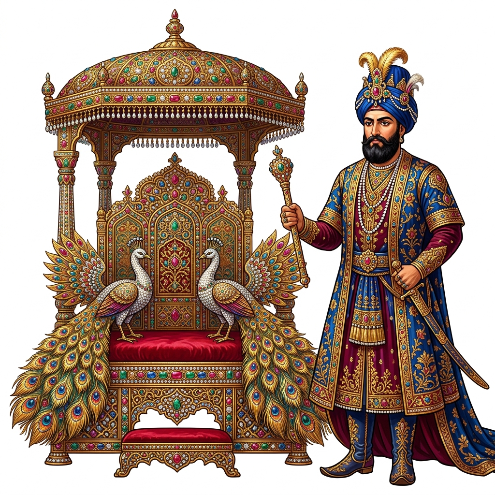
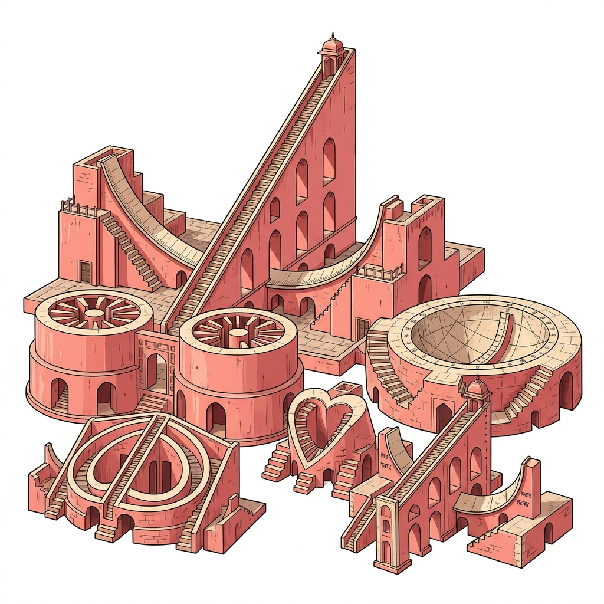
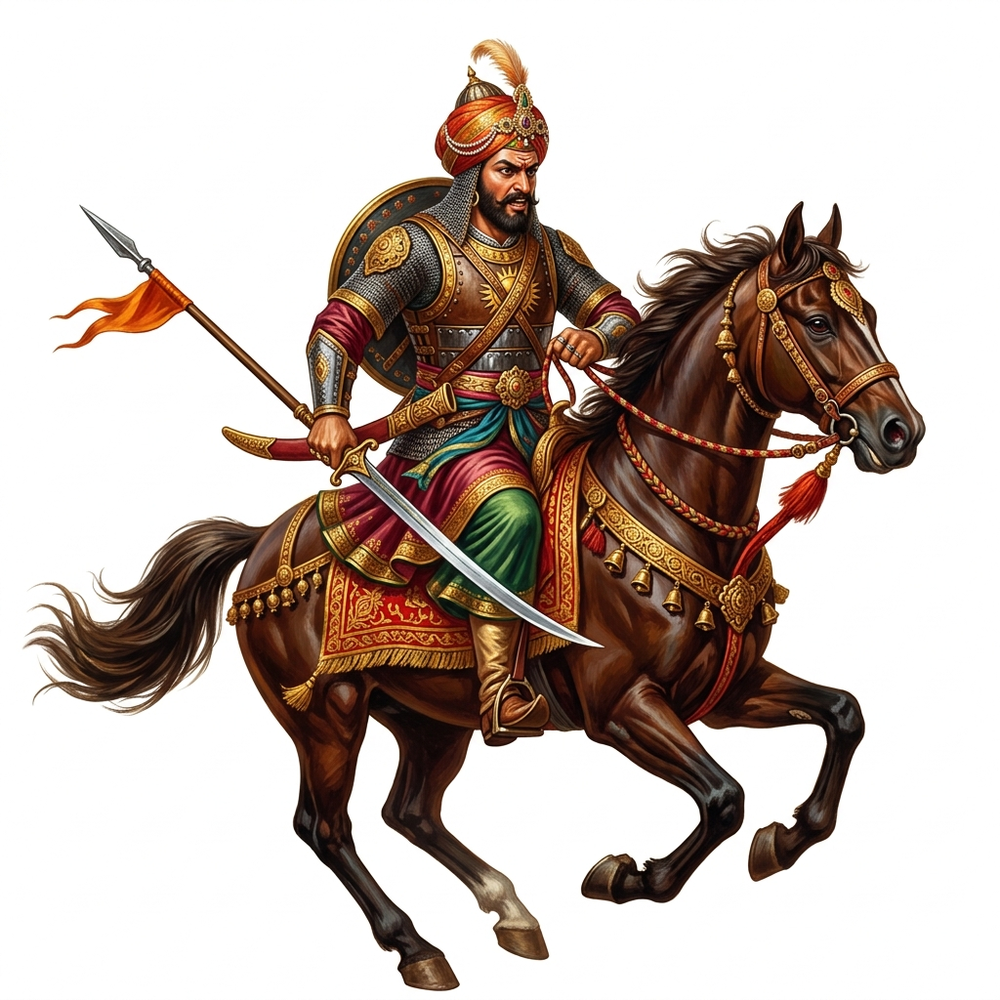

The 18th century is considered the beginning of the Modern Period in India. This era marked the dramatic decline of the mighty Mughal Empire and the simultaneous rise of powerful regional kingdoms. It also laid the foundation for British rule, as European trading companies took advantage of the political instability.
After the death of Emperor Aurangzeb in 1707, the Mughal Empire rapidly began to disintegrate. The rulers who succeeded him are known as the "Later Mughals". They were generally weak, inefficient, and struggled to control their vast territories.
The collapse of the Mughal Empire was not due to a single event, but a combination of political, economic, and administrative failures.
Crisis of the Jagirdari & Mansabdari Systems:
To appease nobles, emperors recklessly gave away crown lands as jagirs (land grants). Eventually, there wasn't enough land left. Additionally, Mansabs (military/administrative ranks) became hereditary, meaning incompetent people inherited vital positions, and the royal treasury was soon entirely depleted.
The weakened state of the Mughal Empire invited devastating foreign invasions from the North-West, which dealt a fatal blow to Mughal prestige and wealth.

The Persian ruler Nadir Shah invaded India, defeated the Mughal army, and ordered a brutal massacre in Delhi. He completely looted the city's wealth.
The Great Loot: When Nadir Shah left Delhi, he took immense wealth with him, including the world-famous Koh-i-Noor diamond and Shah Jahan's legendary, jewel-encrusted Peacock Throne.
An Afghan ruler who invaded India several times between 1748 and 1761. His most significant impact was defeating the Marathas, who were trying to replace the Mughals.
As central authority crumbled, provincial governors and powerful chieftains broke away to establish independent regional kingdoms.

The Rajputs asserted independence but remained internally divided. The most notable ruler was Raja Sawai Jai Singh of Amber. He founded the city of Jaipur and was a great patron of science and astronomy.

The Marathas emerged as the most significant regional power aiming to replace the Mughal Empire. After Shivaji, the real power shifted from the king (Chhatrapati) to the Peshwas (Prime Ministers), who made Pune their capital.
The Third Battle of Panipat (1761): The Maratha dream of replacing the Mughal Empire was shattered when the Afghan ruler Ahmad Shah Abdali defeated them at Panipat. Due to their harsh policies of demanding tribute, the Marathas received no help from neighboring Rajput or Jat rulers. This massive defeat severely weakened Maratha power in the North.